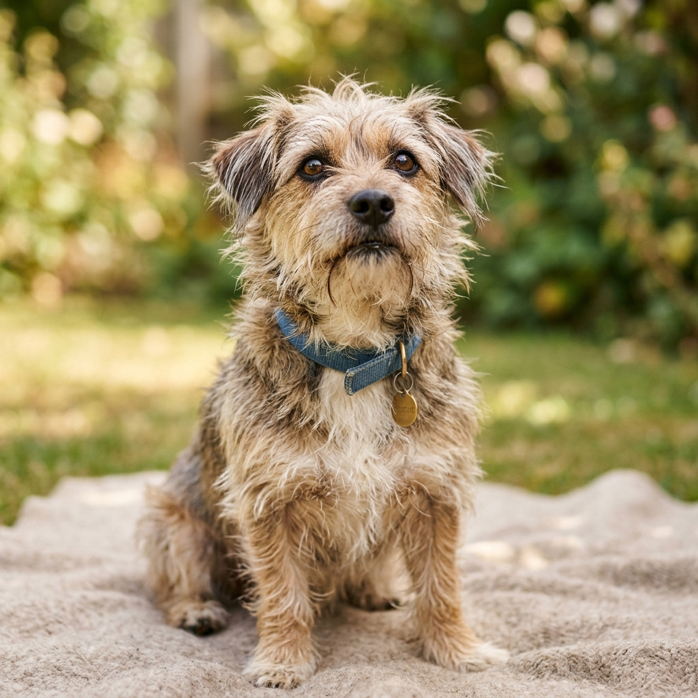
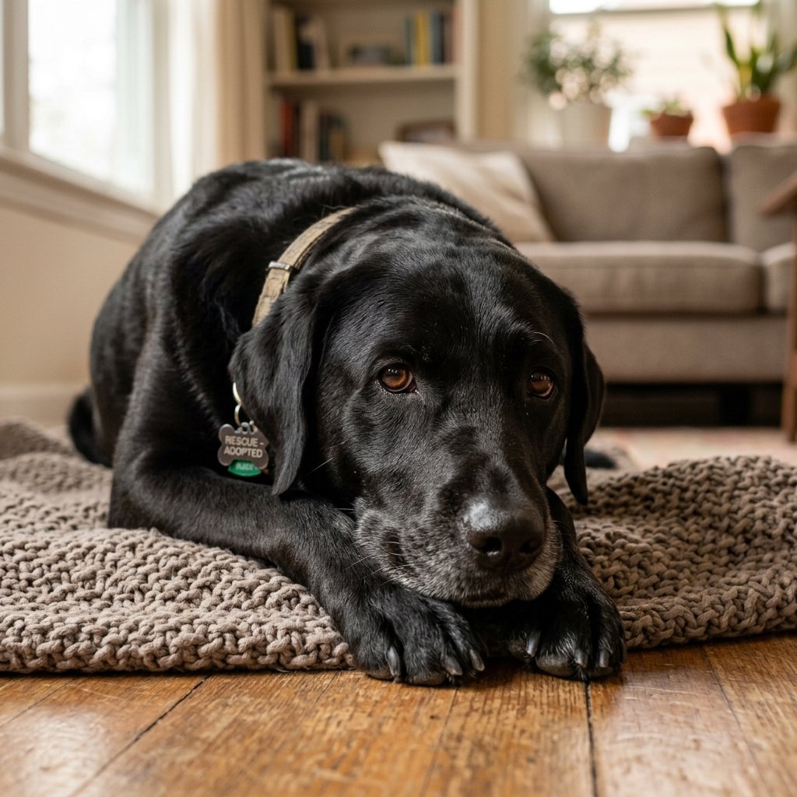
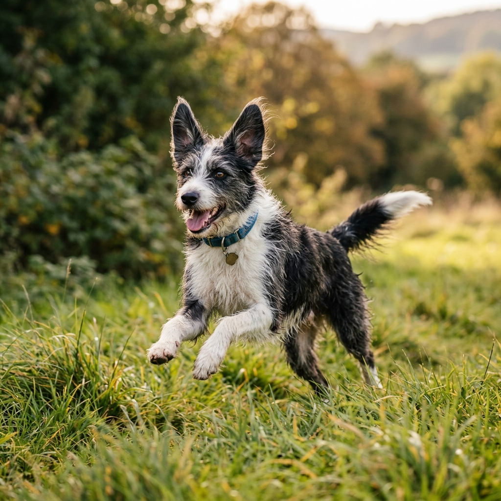
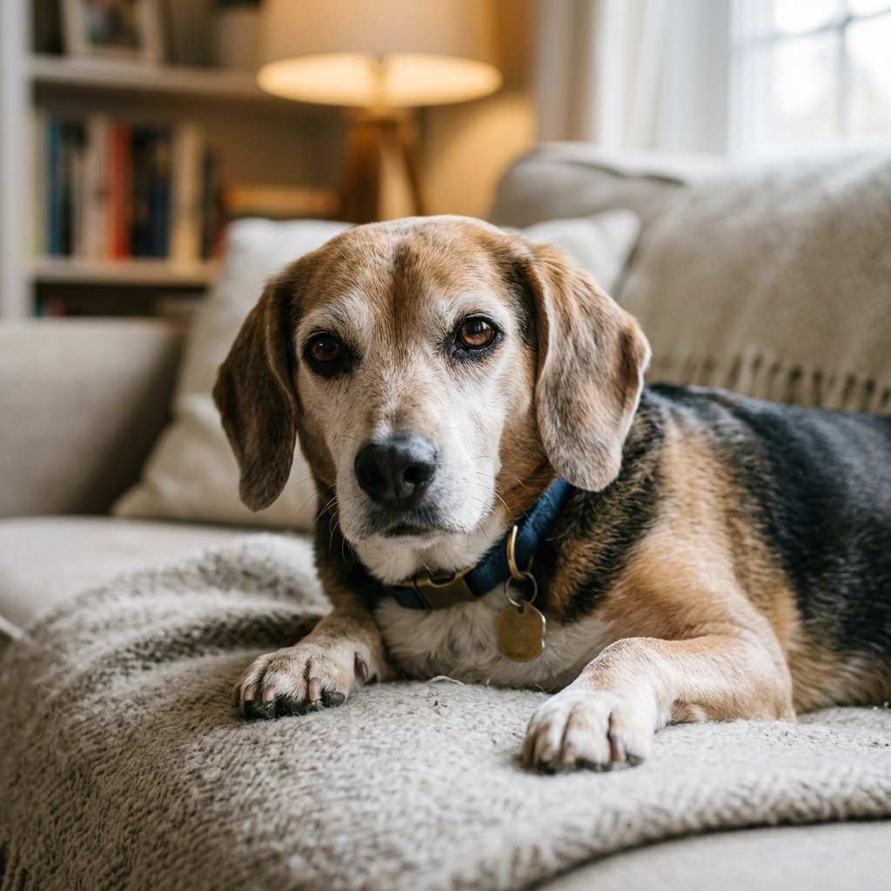

Buddy
Adopted: March 2026
Buddy came to us extremely shy and frightened. With months of patient rehabilitation at the ranch, he slowly learned to trust again. He is now living his best life with a family of five who takes him on weekend hiking trips!

Luna
Adopted: January 2026
Found wandering near the highway, Luna was malnourished and needed urgent medical care. After a full recovery thanks to our dedicated volunteers, she caught the eye of a lovely couple and now enjoys daily beach walks.

Max & Milo
Adopted: November 2025
This bonded pair had nowhere to go after their previous owner passed away. We refused to separate them. Thankfully, a wonderful family opened their hearts and home to adopt them both together!

Daisy
Adopted: August 2025
Daisy was one of our longest residents. Her sweet nature was often overlooked due to her age, but she finally found her perfect match: a retired veteran looking for a loyal companion. They are now inseparable.